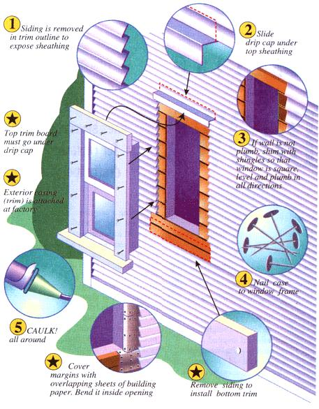
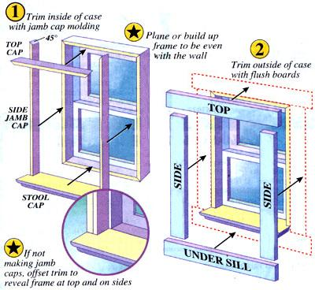

Summer Projects
Choosing and Installing
Do your winter wallet a favor. Carpenter Michael Phillips outlines several options for replacing those drafty fuel wasters.
"Just pop out your old windows and pop in the new!" Those slick, f ullcolor ads you get with the Sunday newspaper supplements make window replacement seem effortless. It isn't. . . if done right. But if your house is over 25 or 30 years old, the effort may well be worth making. Before winter winds begin rattling those leaky old windows and sucking out your heat, here are a few things to consider.
The ads also trumpet: "Never Paint Again!" And, window frames of solid aluminum or vinyl-or the better-quality designs made of wood that's covered or "clad" with a thin layer of metal or plastic-have the color permanently baked on or molded in. Inside or out, you'll never again have to paint skinny little wood moldings between panes, labor with a razor blade to scrape overflow off the glass and cut around the painted-in sashes.
Modern widows are genuine energy savers, greatly reducing the 50% of heat or air-conditioning energy a typical home loses through its windows. Frames incorporate space-age weather stripping that stays resilient through heat and cold and virtually halts the "infiltration" of heated/cooled air to the outdoors and of outside air in. Modern tension/balance systems insulate as they keep sashes in place and easy to raise by maintaining a gentle but even side pressure. You'll never again have to "prop up the summer breeze" with a stick, or stir up the mouse nests in an old sash casement as you fish around after an iron sash weight lost when a brittle old sash cord snapped.
You can still buy windows made with single-glass panes in old-fashioned barewood sashes and frames. But that's for un-heated/air-conditioned sheds and barns. Modern house windows contain insulated glass-sandwiches of two or three panes sealed around the perimeter, with the air between evacuated or replaced with an inert gas for greater insulating value. Insulated glass in a modern frame can reduce heat loss by as much as 35%.
(Please look over the sidebar, "A Window on Window Lingo," so we can agree on often-confusing terminology. What many call a window frame is properly called a "sash"; a pane of glass in a window is a "light"; a windowsill is really a "stool cap:') Confusion also exists as to what constitutes a "replacement window:" For do-it-yourself installation, a replacement double-hung window is a conventional rectangular wooden frame containing a pair of sashes held in place along the sides by tension/balance strips and with unornamented top-, bottom-, and side-exterior trim boards fastened to the frame. (Interior trim must match house decor, so is left to the homeowner to specify and install after the window is in. Also, crank-out casement windows, picture windows, patio sliding windowdoors are beyond this article's scope-and of most homeowners' carpentry skills.)
But, some manufacturers make "replacement windows" that are merely a set of new sashes to go inside existing frames. Other makers apply the term to a thin, formed-vinyl skeleton frame filled with sash; the unit is slipped into an existing casement with the original sash removed.
The building trades call a window in new construction a "prime window." To them, a "replacement window" is the same item installed in the space once occupied by a (newly removed) prime unit. Of course, a new prime window becomes a replacement when used to replace a prime window, frame and all... and once in place, becomes a prime window again. (Abbott & Costello would have had as much fun with windows as they did with baseball.)
But terminology is no joke when you first open a brand new window that doesn't leak cold air, that doesn't need storm windows, and that has sashes that tip in for cleaning with one swipe.
Costs? An an average-sized double hung living room window ready to install will be priced between $100 and $350 depending on size, frame material, and construction and glazing. A good-quality 2-foot by 3-foot double-glazed window with a ready-to-paint primed-wood frame will run about $150 at a discount home-improvement center. A sash-only kit or a vinyl insert costs about 80% of that.
A house full of new windows is not cheap ...but new windows can pay for themselves in five to 10 years of heat/cool ing-cost savings! (If windows contribute to 50% of energy loss and new windows offer a 35% savings: .35 x .50 = 17.5% heating cost-savings/year-for an average payback period of 7.5 years.) New windows increase your home's resale value as well-often by more than they cost.
Indeed, the experts tell us that replacing windows in an older home is that rare thing: a true win/win proposition where Mother Earth and the naturalresource consumer benefit equally. New windows in an old house can contribute as much to global energy savings as they lower the homeowner's heating bill and raise the equity value of his house.
There's more than one way to determine a window opening. Dimensions of the rough opening, the sash opening, and glass area are all different. With an older home, you will find it hard to locate a stock window unit that perfectly matches your rough openings. And, one company's measurements won't correspond with anothers'. In a recent Sunday paper, one lumber yard advertised three brands of 2 1/2 x 4" "standard" windows. One measured 2' 6 1/8" x 4' 1 1/4", another by 2' 6" x 4' 1" and the third by 2' 6X" x 4' 1 1/4". And, the store carries windows from two other makers that offer different dimensions still.
Window sizes listed in catalogs are not measurements of actual width x height of the window units, but of the rough openings (R.O.) in the house framing they will fit into. To function smoothly, a window must be plumb and square and snugly fixed in a rough opening that must be within a 1/2 or 3/4 of an inch of window size. Be sure you measure each rough opening separately and carefully. Order windows that fit.
Speaking of a fit, that's what the manager of our local building-supply house would have had if I'd tried to return my first mismeasured replacement windows-eight double-hung units that turned out to be an inch too wide.
I learned the hard way that you can't measure what you can't see. We were planning to replace the exterior siding and gut the interior of a dilapidated 1880s farm house. I figured I could adjust trim around the windows. And, based on my experience as a house carpenter, I ordered windows to fit what I thought the old house's rough window openings would measure under the trim. My "guestimates" were wrong.
In older structures, windows that look identical-and may even measure the same on the inside-may not be the same size around the outside where they mate with the rough opening in the house frame. Our windows were old factory made stock units alright, but their frames had been planed and trimmed to fit varying-sized rough openings in the framing. A quarter inch here, a half inch there might not seem like much, but it forced me to modify all eight roughs before I was done.
I also had to contend with studs (the vertical boards-2 x 4s usually-that form the wall and partitions in a frame house) that had bowed and warped out of true over the years. Some were canted in the up/down dimension, some in the left/right, some were twisted out of sync with the plane of the wall, and some were warped all out of shape in all dimensions.
In such a situation, you should measure both height and width at ends and middle of the window rough opening and choose the smaller of the measurements. Check corners for square, sides for plumb (perfectly vertical), and the top and bottom for level. As the illustration "An inch out of square..." shows, a rough opening an inch out of square can hold a window an inch narrower than the width measurement. The same is true of window height if the horizontal frame members are not level.
Copy the dimensions and angles of each rough and figure the largest true rectangle that will fit the space... or determine to square and plumb the rough opening to match window dimensions.
Now determine how deep your jambs should be. Measure the thickness of the wall surrounding each window. Precisely measure each layer: inside plaster and lath, rough framing, exterior sheathing, and existing exterior trim. The window's jamb should extend from the outside of the exterior sheathing (not including siding and trim) to the inner surface of the inner wall plaster or other finished surface (but not including interior trim.) See the drawing: "Measuring the Jamb:"
Take your list of measurements to the building-supply center. Ask to look through their window catalogs. Inspect and measure windows in stock and compare with catalog dimensions. You will find that catalogs list rough dimensions a little bigger than the windows-giving you about 3/4 inch of leeway in width and a 1/2 inch in height to allow for level/plumb adjustments on the job. A clerk should be willing to help you interpret the catalogs and help assure that your windows will fit.
Most stock windows come in even increments of four inches in width and odd increments of two or 4 inches in height. You can get a stock window that is 2' 2" or 2' 6" wide, and 3' 5" or 4' 1" high but not one that's an even 2' wide and 4' high.
Older homes will probably require custom-made custom-sized windows. Happily, window makers are so computer automated these days that they will build odd sizes with four to ten weeks' lead time and will charge no more than the price of the next-larger stock size. Don't be afraid to demand precisely what you need.
You have a choice in glass. Plain glass offers little resistance to the passage of heat into or out of a building. Such resistance is measured in R value. A wall with 5 1/2 inches of fiberglass insulation has an R value of 19...leaving a single-pane window with its R value of 0.88 looking like a direct hole to the frigid winter air. A second pane of glass, with a 1/2 inch air space between the layers, increases the glass R value to about 2. Such insulated glass is the standard in today's windows.
More recent innovations have achieved window R values approaching 4 or more. Low-E coated glass with argon gas between the sealed layers adds a third R point. The invisible low-E metallic film reflects long-wave heat energy back into the house in winter and reflects it back out in summer. Argon gas has greater insulative value than air (though it shouldn't be used in high-altitude situations). Triple insulation glass contributes the fourth point to the R value by adding a third layer of glass, but currently is very costly.
Is low-E with argon worth the 10% added cost? From the standpoint of condensation alone-where warm inside air condenses on the surface of the glass on cold nights-the answer is yes. The windows I bought were insulated glass only, and moisture damage is already evident where a bead of ice has formed along the lower edge of the sash. Low-E would have helped by increasing the inside glass temperature and decreasing the likelihood of condensation. Glass manufacturers are giving better deals on low-E too, so it can be expected to continue to drop in price.
You must also specify your window's jamb width. Stock jambs are 4 9/16' wide-to fit neatly into a conventional modern frame wall comprised of a 2 x 4 stud (that is actually 1 1/2" thick and 3 9/16" wide) with a inch of sheathing on both sides. Don't expect a stock jamb to fit your old house wall with roughly planed board sheathing, plaster lath, and varying-sized framing members. You can order windows with custom-width jambs and should if you question your carpentry skills. I find it more economical to order standard jambs and decrease if needed by hand-planing off the excess. If more depth is needed I nail on wood-strip jamb extensions.
Once-popular all-aluminum replacement windows are hard to insulate and are being phased out. You can buy windows in all-vinyl ...in wood left plain or primed or finish-painted ...or in wood that is clad in aluminum or vinyl (wood is still the best insulating of window materials). The choice factors are cost (cladding costs 10 to 15% more and comes in whites and beiges to match most paint schemes) and how much you hate getting on a ladder and painting your house trim every five years.
Anderson introduced the first vinyl- clad windows 25 years ago with a promise (that has stood the test of time) that their Perma-Shield system wouldn't "rust, pit, corrode, chip, flake, peel or blister"-or ever need painting. Most other window manufacturers followed suit and today it is the high-quality all-wood window that is hard to find (and often, more expensive than clad units). Some makers prefer aluminum to vinyl cladding, but with either option, look for seams that are fusion-welded, gasketed, or upped to keep moisture out (lest it soak the wood so it swells or freezes and ruptures the claddingmost likely the year after the warranty expires).
Still, people like me who mourn when an honest wood-frame house is entombed under a shroud of aluminum siding prefer all-wood. Maintaining tradition is a good enough reason for many. Matching a natural log house or stained cedar clapboards, shakes or plywood siding is a better reason still. Our house has spruce-green trim that no beige or off-white cladding would match, and there's no need to pay for cladding if you plan to outrage its no-maintenance feature with paint. Just be ready to haul out the ladder and brushes periodically if you agree that "wood is good."
This job is not as daunting as you might think.
The first step in removing an old window is to pull off the flat exterior trim boards that surround it and that hold the old sash in place-first inside and then outside the house. Do everything you can to conserve the original inside trim boards-both the surround of trim that is flat against the wall, the stool cap, and the thin boards that cover the jambs around the inner surface of the window. Mark each piece so you know which window it fits. If you are retaining the original decor, you may be able to reuse all or most of the original trim. If you are changing decor-say, replacing painted woodwork with natural-even split or splintered originals can serve as patterns to make replacements.
Prying old trim off the small-headed finish nails that hold it minimizes damage to the boards and to the inside walls and exterior siding. Cut painted-in joints with a knife and use a wide and thin-bladed screwdriver to break trim boards away from the underlying window frame. When you've opened a crack you can use a pry bar or clawhammer, but go easy lest you dent the wood. Also, place a flat board between tool and fragile plaster or siding.
If you plan to reuse trim boards, first pry off the header. Insert prybar at the top where dents won't show. Side trim can then be worked off from the top down. Go gently, as old wood is brittle and cracks easily. Remove any nails that come off with the boards by cutting them off at board level with nippers or side-cutting pliers. The nail head is sure to splinter the painted face of the board if you try to hammer it through.
Window frames are generally secured to the house frame through the exterior trim. But you may find windows secured by nails put through the jambs into the surrounding studs. With trim removed inside and out you can usually get a metal-cutting blade through the wall to cut these. (A powerful reciprocating saw that cuts back and forth, or a supersaw-a heavy jigsaw that cuts up and down-is the renovator's tool of choice, as either can cut nails and reach into tight locations.)
Old-style double-hung sash can be removed from the frame by prying the thin wood stops out of their channels in the jamb. Old-timers sometimes nailed the top sash in place, so you may find nails to remove in the corners or sides of the sashes. If you can pry all the fasteners out, you should be able to remove the window frame as a unit. Otherwise, you'll have to dismantle it in pieces. Many old window frames must be wrecked to remove them.
Will the new window fit in the rough opening? Either measure to check or lift it up into place to measure in place. Before lifting, tack a thin board diagonally between opposite corners of the inside frame to lock it into square if the manufacturer didn't ship it braced. Ideally you should have 3/4" of space between the top and side jambs and house framing.
A rough opening that's much larger should be lined with 1' x 3" furring strips as needed to close the gap and provide trim milers. See "Adjusting Rough Opening:"
Widening a too-small rough opening is a harder job. It is best to increase the length of a rough opening by lowering the bottom sill. Windows and doors in a room look best if the tops of all trim boards are even. To increase width, replace the jamb studs that hold up the header with narrower boards. Brace the header with 2 x 4s in the middle and cut out and replace one jamb stud at a time.
Windows in many old post-&-beamstyle houses were nailed between heavy-stud framing without use of headers. You can widen the opening by notching out a stud beam (if it is three or more inches wide) for up to an inch-gaining two inches of width if you notch both sides. Consult a knowledgeable builder to assure you are maintaining code-acceptable structural requirements if you're enlarging window openings beyond these leeway adjustments. I could tell a few stories of ambitious remodelers who took off a bit too much.
Rot in an old window sill often extends into the wall framing. Some rot below the window can be tolerated if structural members are still sound; dig out small amounts of spongy wood, let it dry and soak with preservative or epoxy restorative. Sheathing boards beneath a window that has leaked for years often need to be replaced, which means you'll probably have to patch rotted siding as well. Rot may extend into the floor-to ceiling wall studs. These are bearing members and must be patched or replaced to meet building code. If the job is more than you feel confident undertaking, call in a pro.
You may have to cut out a few inches of lapped clapboards or other siding to accommodate the prefastened exterior trim on a larger-than-original replacement window. Don't butcher it. Hold the window in place and mark around it to determine the area of siding to be removed. Tack a straight board to the siding to serve as a cutting guide for a circular saw. Lest you dull your blade, remove any nails that lie in the line of cut, and be sure to set blade depth to just cut through the siding and not into underlying sheathing boards. Use a chisel to cut out corners where the saw blade can't reach.
Window flashing must be slid under the siding that extends across the top of the enlarged opening to make a drip cap to lead rain water out over the window-so it won't get behind to rot the wood. (See illustration: "Window flashing ....") Measure the thickness of the top trim boards to know what width of preformed (L-bent) window flashing to buy. Or, you can bend aluminum flashing to make your own-necessary for board and batten and other unconventional siding.
I strongly recommend painting/staining both sides of unclad wood sash before installation. The vinyl gasket holding the insulated glass in place and the jamb liners in which the sash slides should not be painted. Keep paint off the weather stripping as well. Bare wood should be primed with an oil-base primer to avoid raising the wood grain, whether you're using oil or latex finish coats.
Lift the new window into place from the outside. Open double-hung sash to provide a better grip if you wish, but be sure to shut it tight before fastening or you can bow the frame. The top trim board should fit in under the drip cap. Center the unit in the opening so the space around it is equal on both sides. A helper can hold the window in place while you square and fasten it from outside. Use long finish nails to fasten through wood; long flat-headed roofing nails are used to fasten the plastic or metal nailing flange that protrudes around the margin of many clad cases.
Use a carpenter's level to determine which end of the window sill is lowest. Tack the higher side with a galvanized finish nail through the lower corner of the side trim and about an inch from the outside edge of a flat casing so it will reach into the surrounding studs of the rough opening. Using wedges or wood blocks, block the sill up till it is level and tack the corner on the free side.
Plumb one side of the window (so it is perfectly vertical side-to-side and front-to-back) with the level. Tack nails through the casing sides about halfway up and in the upper corners. Confirm that your diagonal bracing held the window square and the sashes look to be evenly spaced, plumb and level in the frame. Complete fastening the case with nails every foot or so around the frame, including across the header trim. Drive the nails home with a nail set, plug nail holes and finish.
Use a long-lasting caulk all around the outside of the window. If you find more than a 1/4-inch gap between the trim and the siding, whittle spacers from scrap, tack them in, and caulk over.
You'll need to splice in new siding if the window is smaller than original; many an old window modification is revealed by a frame of short pieces of siding. In any event, a new section of clapboard or other siding should be spliced in beneath the sill to extend up into a manufacturer-routed channel, and the joint generously caulked.
Inside, support the center of the sill with a wedge block or shims. The side jambs must be supported with wedges or shim shingles. Tap wedges in the open space around jambs at top, center and bottom. Move the sashes up and down and use a straightedge to be sure you're not bowing out the center of the jamb. When jambs are snug all along, nail through frame and shims and cut off shims behind the plane of the wall surface. Only then remove the diagonal.
Press loose fill insulation in the gap between the edge of the window frame and the rough opening. Don't jam-pack the insulation in-it's the airspace between the fibers that adds insulation value.
The front face of the frame may not meet your interior wall surface squarely. Plane off any jamb that extends beyond the plane of the wall. Use wood-strip jamb extensions if needed to bring a toonarrow frame out flush with the surface of the wall. Both top and side jambs or jamb extensions can be planed to mate with a leaning wall surface.
Jamb-extension board comes in any length and up to 3 inches wide. It is best attached by screwing at a slight angle to the 1-inch-thick jamb in countersunk holes. Use a straightedge to extend the plane of the interior wall to determine the width extension needed.
You may have to compensate for as much as an inch of wall lean from top to bottom, or worse, must contend with an abrupt bulge in the wall. If so, you need to perform a little magic with your hand plane. And, even after you have labored long and hard to get it right, a level window in a very unplumb room is likely to look crooked no matter how good your trim artistry.
Your replacement window came with exterior trim installed. But you have to cut and install the interior trim. It is easiest if you use the original stool cap and trim boards. Especially if the new window is smaller than the originals, you can just trim off an inch here and there and reinstall them. Don't worry that nails will scar painted trim. Just chip paint out of the scars to reveal bare wood, patch with wood filler, sand, and refinish.
If you are making up new inside trim, it is easiest to cut new boards that replicate the originals-even if you adopt different window-trim boards, ornate with different edge or corner moldings. After trim is cut, sand and prime it before final fastening.
The top inner-trim board is usually thicker than the long side boards. It is a nice touch to notch out the underside of top trim to hide the ends of the side boards. Then, seams won't open up when the trim boards inevitably shrink.
Start trimming by cutting and nailing on the stool cap. (Use small-headed finish nails to attach, all trim. Sink heads with a nail set and plug the holes.) Stock sizes of stool cap molding as well as jamb caps that fit inside a deep casing are available at building-supply centers, or you can make your own. The stool is cut in a "Fat-T" shape and attached flat. The central stem of the "T" extends back into the casing so its edge almost, but not quite, meets the bottom rail of the lower sash. Notched-out ends of the top of the "T" meet the wall surface as thin wings that extend beyond each side of sash opening by the width of your side-trim boards plus a 1/2 inch or so on each side.
Cut side-trim boards (the long boards that lie flat on the wall and run up and down beside the window) to extend from the upper surface of the stool cap wings to a little beyond the bottom edge of the upper jamb. Nail them to jambs, leaving a 1/4" reveal of jamb edge inside of each long edge. Or, in shallow windows where tension/balance strips cover the entire side jamb, arrange side trim so its inner edge covers the strip-so only the sash is revealed.
Cut and nail on the horizontal headertrim board, notching as illustrated to accept ends of side trim. The header-trim board should extend beyond outer edges of sidetrim boards by an inch or so at each side. A 1/4 of jamb should reveal itself under the top board-just as along the side-trim boards.
Under the lip of the stool add a bottom-trim board as long as the window is wide, side-trim boards included.
If the window is deep, you may want to cut two flat molding strips to fit against each inner-side jamb to conceal edges of tension/balance strips and/or side edges of the sash. Cut length to make a snug fit from the top jamb down to the sill cap (it is good if you have to bow the board to install it). Boards should be width trimmed so their inner edges don't quite touch the sash and outer edges are parallel to the edge of the underlying jamb-not all the way out to the outer edge of the side trim. If an inner- trim board is needed at the top, cut it the same width as the side trim. Cut top ends of side trim and ends of top trim at 45° angles so they mate in a neat 90° corner.
Even insulated (non-E) glass may show some condensation or ice buildup along the lower edge where it meets the sash. Keep the interior sash dry as possible to keep water from flaking paint or keep mildew from growing on unpainted sash and stool caps. Restain or varnish natural sash every so often to continue repelling moisture. When weather is warm and air dry in the fall, scrape and paint a peeling, painted-wood window to minimize moisture damage, and check weather stripping and caulking periodically and treat the gaps.
A light touch of paraffin on the tension/balance strips once in a while will keep sashes from sticking. And, sorry to say, even with the most modern of windows, you'll still have to wash the lights. (Use a bucket of a good ammonia-based glass cleaner and sponge to wash, and a rubber-edged squeegee to remove water, and the work will go fast.)
There are valid rea sons for restoring old windows instead of replacing them.
The classic look of small-pane windows fits an old house. Arched windows or the curved sash in a round bay may be irreplaceable. Call in a professional if you have colonial antique 8 over 12s or ornate Victorian stained glass to restore.
An old window can be made more efficient. A local millworks can install modern weather-strip in old sash. If you can't fine old-style wood storm win dows, they will build custom-wood storms for a reasonable price. Removing this insulating layer of glass in the spring and putting it back up in fall is a small price to pay to keep 100-year-old classic windows in service. And, if you close heavy draperies at night or install insulated fabric shades you may be able to keep the thermostat down low.
One of the merits of wood construction is its "fixablity." If wood does rot out, new wood can be shaped and fitted to rep lace it. Epoxy fillers can strengthen and solidify weathered wood, restoring it to a paintable surface. What might appear to be a hopeless window to a homeowner may be a doable challenge to an experienced restorer.
A quality restoration can cost as much as $400-for a window without divided lights. But, I may keep one of our old farmhouse windows intact just to experience the delight from the frost patterns that a cold morning brings to an old-time uninsulated window.
There are dozens of window manufacturers-some national "name brands" and some regional. I haven't installed all the different makes or seen how they've performed over the years. I can, however, tell you what to look for in a good double- hung window.
Insulated glass is a must, with the dual-glazing at least 1/2" thick overall. Low-E coating and argon gas between the glass layers is probably worth the additional 10% in price. Choose a window well enough insulated and weather-stripped that it carries an air infiltration rate at least two times better than the industry standard of 0.34 CFM. Effective weather-stripping will be routed in place (set into grooves in the frame and sash). Look for matching weather strip on both faces of the critical check rail. Double sash locks on glass wider than 32" are a must to pull the sash weather-tight at the check rail.
All framing parts ex posed to weather should be clear Ponderosa Pine (no finger joints where two short pieces are glued together) and treated with water-repelling wood preservative. Jambs should be made of nominal 5/4" stock (with an actual thickness of one inch). Gasketing between frame joints makes for a tighter window. If you're not opting for a clad exterior, some companies offer resin-impregnated sills that are said to offer a more stable painting surface that resists damage from sun and rain. The edges of most insulated glass are sealed with an aluminium gasket-that will conduct heat. WENCO Windows is one maker that has come out with a new spacer design that allows the insulative space between the glass to extend all the way to the edge.
Gone are the days of single panes held by glazier's points and window putty. Insulated glass is generally held by a vinyl marine glazing gasket. The sash must be disassembled to replace bro ken glass. Screwed corners permit relatively easy glass replacement and are less likely to pull apart over time. WENCO also fastens sashes with screws that are concealed on the sides.
You'll find about a 20% range in listed prices for comparable quality windows among manufacturers. Most building-supply centers will discount suggested retail price by 10%, and you can save another 10% if you buy all your windows at once and/or place your window order during a sale week. A world of quality differences exists in the lower-price ranges, from length of glass warranty to attention to details like watertight joints and a smooth balance system. Ask an experienced building contractor or your local window dealer which windows have proved themselves durable and dependable over the years in your climate. Choose options to fit your house style and budget, knowing the energy payback will eventually recoup the window investment and more.
|
Exterior View of Basic Replacement Window Procedure |
 Replacement Window: Interior View |
 |